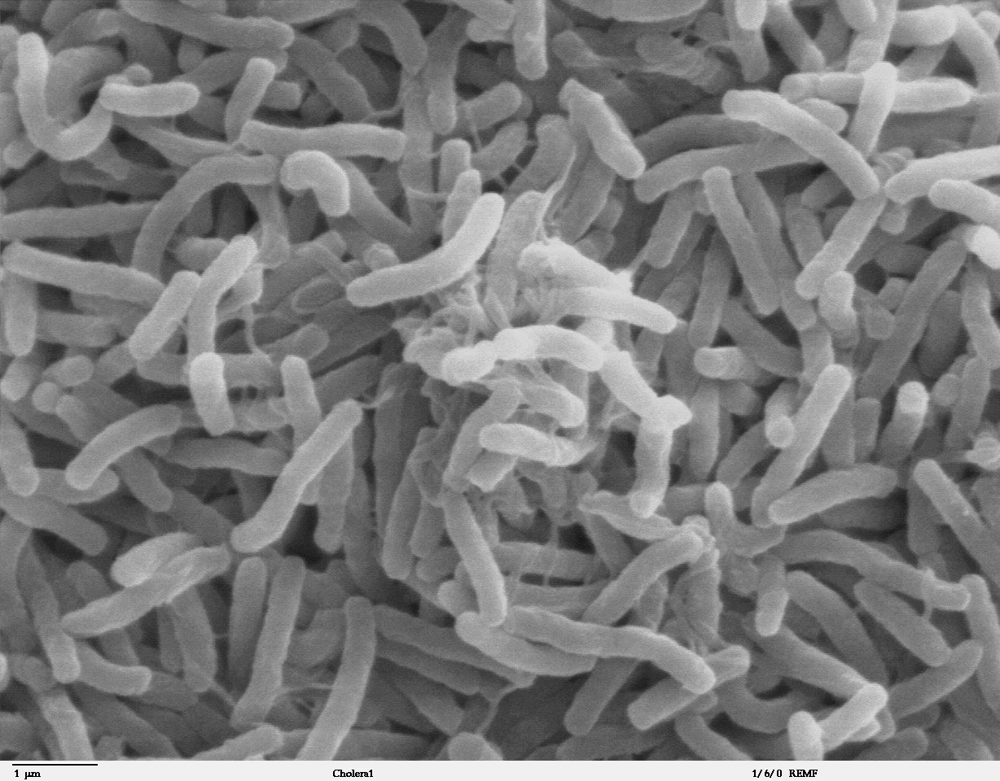

Welcome to the Bioinformatics Course
Learn step-by-step how to analyze Cholera samples using Illumina sequencing and Galaxy workflows

Vibrio cholerae bacteria under scanning electron microscope
Course Modules
01
Unix/Linux Introduction
Master the command line basics for bioinformatics workflows
02
Package Management with Conda
Learn to manage bioinformatics software environments
03
Containers
Understanding Docker and containerized workflows
04
Nextflow
Build scalable and reproducible bioinformatics pipelines
05
R Programming
Statistical analysis and visualization for genomics data
06
Galaxy Introduction
Get started with the Galaxy platform for bioinformatics
07
Making Collections in Galaxy
Learn to organize and process multiple samples efficiently
08
Workflows
Create automated analysis pipelines in Galaxy
09
Cholera Case Study
Apply everything you've learned to analyze real Cholera samples